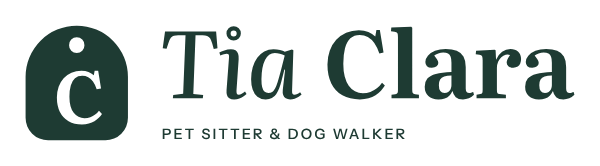
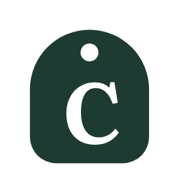
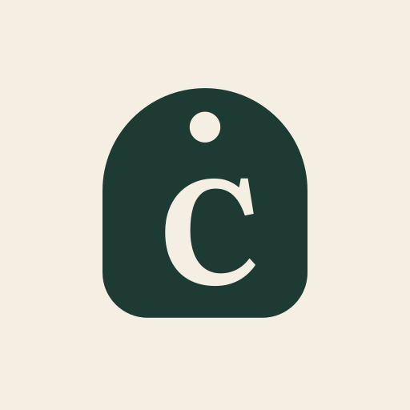
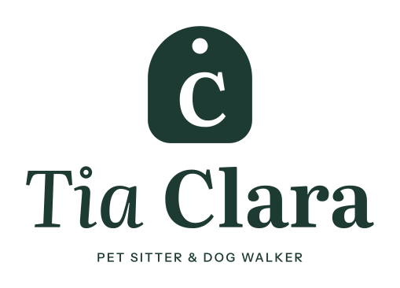
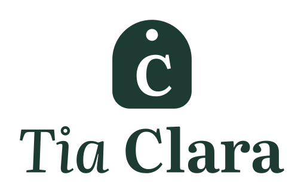

Favicon 16 · 24 · 32 px (tamanho real)
16 px: silhueta + C (compacto); aba escura: versão clara
Preto sobre branco
funciona em 1 cor
Branco sobre preto

furo e C vazados preservam a leitura
Escala de cinza
contraste mantido sem cor
1 cor · impressão (carimbo / hot stamping)
sem gradiente, sem sombra, sem meio-tom
Tela de baixa qualidade (simulação)


assinatura horizontal legível a 120 px com borrão
Avatar · recorte circular (Instagram / WhatsApp)

nada toca o círculo; lê a 40 px (lista de conversas)
Cabeçalho de site (64 px)
abaixo de 60 px de altura: versão compacta, sem descritor
Coluna estreita · vertical


com descritor ≥ 140 px de largura; compacta ≥ 64 px; abaixo, só símbolo
Fundo carregado · sem proteção
✗ não fazer: logo direto sobre textura/foto
Fundo carregado · com área de proteção
✓ placa Linho com 1x de margem
Fundo carregado · símbolo sólido
✓ o símbolo é uma forma cheia: sobrevive sozinho